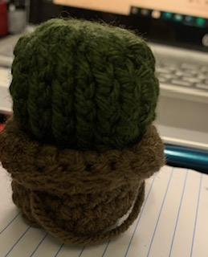
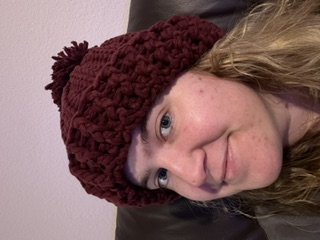
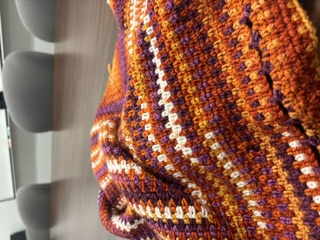

I like to crochet, sew, knit, and embroider (this list is ordered by the frequency with which I have done them in the past few years).
Here are some of my favorite things that I am making or have made (and have remembered to photograph):



Baking
I like baking a variety of breads, muffins, cakes, cookies, etc. Here are a few that I have made (and actually remembered to photograph):
Alignment: Neutral Good A neutral good character does the best that a good person can do. He is devoted to helping others. He works with kings and magistrates but does not feel beholden to them. Neutral good is the best alignment you can be because it means doing what is good without bias for or against order. However, neutral good can be a dangerous alignment when it advances mediocrity by limiting the actions of the truly capable.
Race: Elves are known for their poetry, song, and magical arts, but when danger threatens they show great skill with weapons and strategy. Elves can live to be over 700 years old and, by human standards, are slow to make friends and enemies, and even slower to forget them. Elves are slim and stand 4.5 to 5.5 feet tall. They have no facial or body hair, prefer comfortable clothes, and possess unearthly grace. Many others races find them hauntingly beautiful.
Class: Wizards are arcane spellcasters who depend on intensive study to create their magic. To wizards, magic is not a talent but a difficult, rewarding art. When they are prepared for battle, wizards can use their spells to devastating effect. When caught by surprise, they are vulnerable. The wizard's strength is her spells, everything else is secondary. She learns new spells as she experiments and grows in experience, and she can also learn them from other wizards. In addition, over time a wizard learns to manipulate her spells so they go farther, work better, or are improved in some other way. A wizard can call a familiar- a small, magical, animal companion that serves her. With a high Intelligence, wizards are capable of casting very high levels of spells.